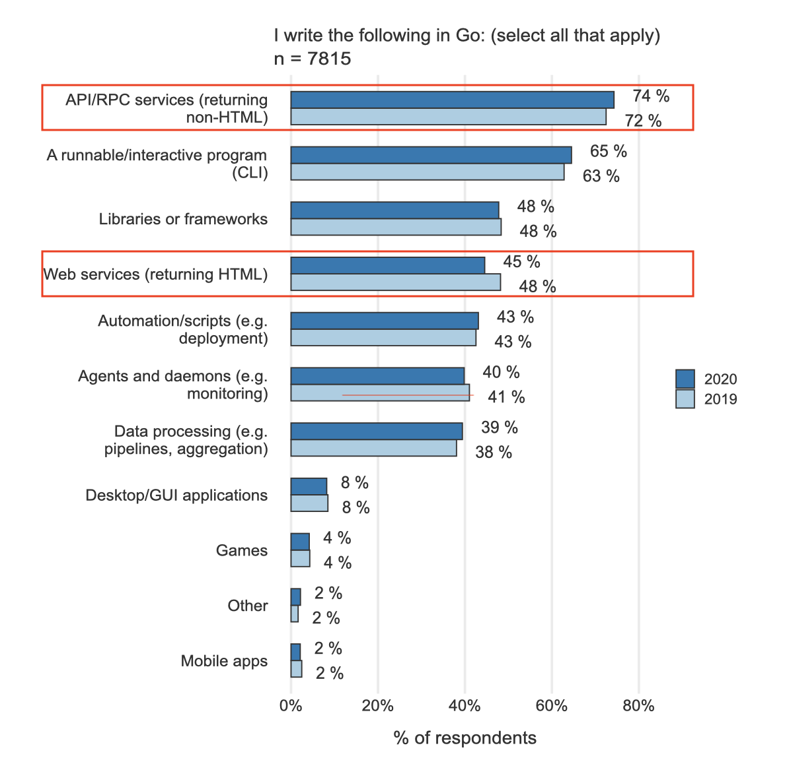
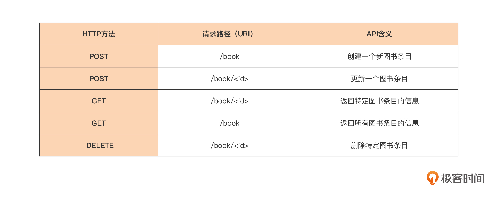
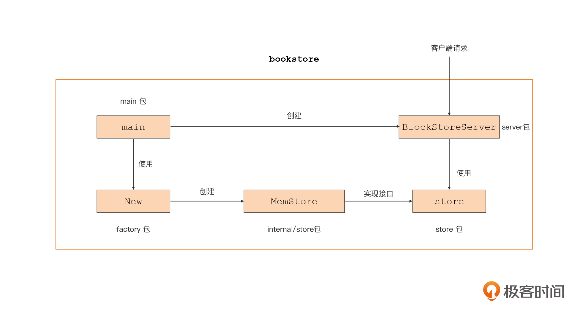

- 00 开篇词 这样入门Go，才能少走弯路.md.html
- 01 前世今生：你不得不了解的Go的历史和现状.md.html
- 02 拒绝“Hello and Bye”：Go语言的设计哲学是怎么一回事？.md.html
- 03 配好环境：选择一种最适合你的Go安装方法.md.html
- 04 初窥门径：一个Go程序的结构是怎样的？.md.html
- 05 标准先行：Go项目的布局标准是什么？.md.html
- 06 构建模式：Go是怎么解决包依赖管理问题的？.md.html
- 07 构建模式：Go Module的6类常规操作.md.html
- 08 入口函数与包初始化：搞清Go程序的执行次序.md.html
- 09 即学即练：构建一个Web服务就是这么简单.md.html
- 10 变量声明：静态语言有别于动态语言的重要特征.md.html
- 11 代码块与作用域：如何保证变量不会被遮蔽？.md.html
- 12 基本数据类型：Go原生支持的数值类型有哪些？.md.html
- 13 基本数据类型：为什么Go要原生支持字符串类型？.md.html
- 14 常量：Go在“常量”设计上的创新有哪些？.md.html
- 15 同构复合类型：从定长数组到变长切片.md.html
- 16 复合数据类型：原生map类型的实现机制是怎样的？.md.html
- 17 复合数据类型：用结构体建立对真实世界的抽象.md.html
- 18 控制结构：if的“快乐路径”原则.md.html
- 19 控制结构：Go的for循环，仅此一种.md.html
- 20 控制结构：Go中的switch语句有哪些变化？.md.html
- 21 函数：请叫我“一等公民”.md.html
- 22 函数：怎么结合多返回值进行错误处理？.md.html
- 23 函数：怎么让函数更简洁健壮？.md.html
- 24 方法：理解“方法”的本质.md.html
- 25 方法：方法集合与如何选择receiver类型？.md.html
- 26 方法：如何用类型嵌入模拟实现“继承”？.md.html
- 27 即学即练：跟踪函数调用链，理解代码更直观.md.html
- 28 接口：接口即契约.md.html
- 29 接口：为什么nil接口不等于nil？.md.html
- 30 接口：Go中最强大的魔法.md.html
- 31 并发：Go的并发方案实现方案是怎样的？.md.html
- 32 并发：聊聊Goroutine调度器的原理.md.html
- 33 并发：小channel中蕴含大智慧.md.html
- 34 并发：如何使用共享变量？.md.html
- 35 即学即练：如何实现一个轻量级线程池？.md.html
- 36 打稳根基：怎么实现一个TCP服务器？（上）.md.html
- 37 代码操练：怎么实现一个TCP服务器？（中）.md.html
- 38 成果优化：怎么实现一个TCP服务器？（下）.md.html
- 39 驯服泛型：了解类型参数.md.html
- 40 驯服泛型：定义泛型约束.md.html
- 41 驯服泛型：明确使用时机.md.html
- 元旦快乐 这是一份暂时停更的声明.md.html
- 加餐 作为Go Module的作者，你应该知道的几件事.md.html
- 加餐 如何拉取私有的Go Module？.md.html
- 加餐 我“私藏”的那些优质且权威的Go语言学习资料.md.html
- 加餐 聊聊Go 1.17版本的那些新特性.md.html
- 加餐 聊聊Go语言的指针.md.html
- 加餐 聊聊最近大热的Go泛型.md.html
- 大咖助阵 叶剑峰：Go语言中常用的那些代码优化点.md.html
- 大咖助阵 大明：Go泛型，泛了，但没有完全泛.md.html
- 大咖助阵 孔令飞：从小白到“老鸟”，我的Go语言进阶之路.md.html
- 大咖助阵 徐祥曦：从销售到分布式存储工程师，我与 Go 的故事.md.html
- 大咖助阵 曹春晖：聊聊 Go 语言的 GC 实现.md.html
- 大咖助阵 海纳：聊聊语言中的类型系统与泛型.md.html
- 期中测试 一起检验下你的学习成果吧.md.html
- 用户故事 罗杰：我的Go语言学习之路.md.html
- 结束语 和你一起迎接Go的黄金十年.md.html
- 结课测试 快来检验下你的学习成果吧！.md.html
- 捐赠
09 即学即练：构建一个Web服务就是这么简单
你好，我是Tony Bai。
在入门篇前面的几节课中，我们已经从Go开发环境的安装，一路讲到了Go包的初始化次序与Go入口函数。讲解这些，不仅仅是因为它们是你学习Go语言的基础，同时我也想为你建立“手勤”的意识打好基础。
作为Go语言学习的“过来人”，学到这个阶段，我深知你心里都在跃跃欲试，想将前面学到的知识综合运用起来，实现一个属于自己的Go程序。但到目前为止，我们还没有开始Go基础语法的系统学习，你肯定会有一种“无米下炊”的感觉。
不用担心，我在这节课安排了一个实战小项目。在这个小项目里，我希望你不要困在各种语法里，而是先跟着我““照猫画虎”地写一遍、跑一次，感受Go项目的结构，体会Go语言的魅力。
预热：最简单的HTTP服务
在想选择以什么类型的项目的时候，我还颇费了一番脑筋。我查阅了Go官方用户2020调查报告，找到Go应用最广泛的领域调查结果图，如下所示：

我们看到，Go应用的前4个领域中，有两个都是Web服务相关的。一个是排在第一位的API/RPC服务，另一个是排在第四位的Web服务（返回html页面）。考虑到后续你把Go应用于Web服务领域的机会比较大，所以，在这节课我们就选择一个Web服务项目作为实战小项目。
不过在真正开始我们的实战小项目前，我们先来预热一下，做一下技术铺垫。我先来给你演示一下在Go中创建一个基于HTTP协议的Web服务是多么的简单。
这种简单又要归功于Go“面向工程”特性。在02讲介绍Go的设计哲学时，我们也说过，Go“面向工程”的特性，不仅体现在语言设计方面时刻考虑开发人员的体验，而且它还提供了完善的工具链和“自带电池”的标准库，这就使得Go程序大大减少了对外部第三方包的依赖。以开发Web服务为例，我们可以基于Go标准库提供的net/http包，轻松构建一个承载Web内容传输的HTTP服务。
下面，我们就来构建一个最简单的HTTP服务，这个服务的功能很简单，就是当收到一个HTTP请求后，给请求方返回包含“hello, world”数据的响应。
我们首先按下面步骤建立一个simple-http-server目录，并创建一个名为simple-http-server的Go Module：
$mkdir simple-http-server
$cd simple-http-server
$go mod init simple-http-server
由于这个HTTP服务比较简单，我们采用最简项目布局，也就是在simple-http-server目录下创建一个main.go源文件：
package main
import "net/http"
func main() {
http.HandleFunc("/", func(w http.ResponseWriter, r *http.Request){
w.Write([]byte("hello, world"))
})
http.ListenAndServe(":8080", nil)
}
这些代码就是一个最简单的HTTP服务的实现了。在这个实现中，我们只使用了Go标准库的http包。可能你现在对http包还不熟悉，但没有关系，你现在只需要大致了解上面代码的结构与原理就可以了。
这段代码里，你要注意两个重要的函数，一个是ListenAndServe，另一个是HandleFunc。
你会看到，代码的第9行，我们通过http包提供的ListenAndServe函数，建立起一个HTTP服务，这个服务监听本地的8080端口。客户端通过这个端口与服务建立连接，发送HTTP请求就可以得到相应的响应结果。
那么服务端是如何处理客户端发送的请求的呢？我们看上面代码中的第6行。在这一行中，我们为这个服务设置了一个处理函数。这个函数的函数原型是这样的：
func(w http.ResponseWriter, r *http.Request)
这个函数里有两个参数，w和r。第二个参数r代表来自客户端的HTTP请求，第一个参数w则是用来操作返回给客户端的应答的，基于http包实现的HTTP服务的处理函数都要符合这一原型。
你也发现了，在这个例子中，所有来自客户端的请求，无论请求的URI路径（RequestURI）是什么，请求都会被我们设置的处理函数处理。为什么会这样呢？
这是因为，我们通过http.HandleFunc设置这个处理函数时，传入的模式字符串为“/”。HTTP服务器在收到请求后，会将请求中的URI路径与设置的模式字符串进行最长前缀匹配，并执行匹配到的模式字符串所对应的处理函数。在这个例子中，我们仅设置了“/”这一个模式字符串，并且所有请求的URI都能与之匹配，自然所有请求都会被我们设置的处理函数处理。
接着，我们再来编译运行一下这个程序，直观感受一下HTTP服务处理请求的过程。我们首先按下面步骤来编译并运行这个程序：
$cd simple-http-server
$go build
$./simple-http-server
接下来，我们用curl命令行工具模拟客户端，向上述服务建立连接并发送http请求：
$curl localhost:8080/
hello, world
我们看到，curl成功得到了http服务返回的“hello, world”响应数据。到此，我们的HTTP服务就构建成功了。
当然了，真实世界的Web服务不可能像上述例子这么简单，这仅仅是一个“预热”。我想让你知道，使用Go构建Web服务是非常容易的。并且，这样的预热也能让你初步了解实现代码的结构，先有一个技术铺垫。
下面我们就进入这节课的实战小项目，一个更接近于真实世界情况的图书管理API服务。
图书管理API服务
首先，我们先来明确一下我们的业务逻辑。
在这个实战小项目中，我们模拟的是真实世界的一个书店的图书管理后端服务。这个服务为平台前端以及其他客户端，提供针对图书的CRUD（创建、检索、更新与删除）的基于HTTP协议的API。API采用典型的RESTful风格设计，这个服务提供的API集合如下：

这个API服务的逻辑并不复杂。简单来说，我们通过id来唯一标识一本书，对于图书来说，这个id通常是ISBN号。至于客户端和服务端中请求与响应的数据，我们采用放在HTTP协议包体（Body）中的Json格式数据来承载。
业务逻辑是不是很简单啊？下面我们就直接开始创建这个项目。
项目建立与布局设计
我们按照下面步骤创建一个名为bookstore的Go项目并创建对应的Go Module：
$mkdir bookstore
$cd bookstore
$go mod init bookstore
go: creating new go.mod: module bookstore
通过上面的业务逻辑说明，我们可以把这个服务大体拆分为两大部分，一部分是HTTP服务器，用来对外提供API服务；另一部分是图书数据的存储模块，所有的图书数据均存储在这里。
同时，这是一个以构建可执行程序为目的的Go项目，我们参考Go项目布局标准一讲中的项目布局，把这个项目的结构布局设计成这样：
├── cmd/
│ └── bookstore/ // 放置bookstore main包源码
│ └── main.go
├── go.mod // module bookstore的go.mod
├── go.sum
├── internal/ // 存放项目内部包的目录
│ └── store/
│ └── memstore.go
├── server/ // HTTP服务器模块
│ ├── middleware/
│ │ └── middleware.go
│ └── server.go
└── store/ // 图书数据存储模块
├── factory/
│ └── factory.go
└── store.go
现在，我们既给出了这个项目的结构布局，也给出了这个项目最终实现的源码文件分布情况。下面我们就从main包开始，自上而下逐一看看这个项目的模块设计与实现。
项目main包
main包是主要包，为了搞清楚各个模块之间的关系，我在这里给出了main包的实现逻辑图：

同时，我也列出了main包（main.go）的所有代码，你可以先花几分钟看一下：
package main
import (
_ "bookstore/internal/store"
"bookstore/server"
"bookstore/store/factory"
"context"
"log"
"os"
"os/signal"
"syscall"
"time"
)
func main() {
s, err := factory.New("mem") // 创建图书数据存储模块实例
if err != nil {
panic(err)
}
srv := server.NewBookStoreServer(":8080", s) // 创建http服务实例
errChan, err := srv.ListenAndServe() // 运行http服务
if err != nil {
log.Println("web server start failed:", err)
return
}
log.Println("web server start ok")
c := make(chan os.Signal, 1)
signal.Notify(c, syscall.SIGINT, syscall.SIGTERM)
select { // 监视来自errChan以及c的事件
case err = <-errChan:
log.Println("web server run failed:", err)
return
case <-c:
log.Println("bookstore program is exiting...")
ctx, cf := context.WithTimeout(context.Background(), time.Second)
defer cf()
err = srv.Shutdown(ctx) // 优雅关闭http服务实例
}
if err != nil {
log.Println("bookstore program exit error:", err)
return
}
log.Println("bookstore program exit ok")
}
在Go中，main包不仅包含了整个程序的入口，它还是整个程序中主要模块初始化与组装的场所。那对应在我们这个程序中，主要模块就是第16行的创建图书存储模块实例，以及第21行创建HTTP服务模块实例。而且，你还要注意的是，第21行创建HTTP服务模块实例的时候，我们把图书数据存储实例s作为参数，传递给了NewBookStoreServer函数。这两个实例的创建原理，我们等会再来细细探讨。
这里，我们重点来看main函数的后半部分（第30行~第42行），这里表示的是，我们通过监视系统信号实现了http服务实例的优雅退出。
所谓优雅退出，指的就是程序有机会等待其他的事情处理完再退出。比如尚未完成的事务处理、清理资源（比如关闭文件描述符、关闭socket）、保存必要中间状态、内存数据持久化落盘，等等。如果你经常用Go来编写http服务，那么http服务如何优雅退出，就是你经常要考虑的问题。
在这个问题的具体实现上，我们通过signal包的Notify捕获了SIGINT、SIGTERM这两个系统信号。这样，当这两个信号中的任何一个触发时，我们的http服务实例都有机会在退出前做一些清理工作。
然后，我们再使用http服务实例（srv）自身提供的Shutdown方法，来实现http服务实例内部的退出清理工作，包括：立即关闭所有listener、关闭所有空闲的连接、等待处于活动状态的连接处理完毕，等等。当http服务实例的清理工作完成后，我们整个程序就可以正常退出了。
接下来，我们再重点看看构成bookstore程序的两个主要模块：图书数据存储模块与HTTP服务模块的实现。我们按照main函数中的初始化顺序，先来看看图书数据存储模块。
图书数据存储模块（store)
图书数据存储模块的职责很清晰，就是用来存储整个bookstore的图书数据的。图书数据存储有很多种实现方式，最简单的方式莫过于在内存中创建一个map，以图书id作为key，来保存图书信息，我们在这一讲中也会采用这种方式。但如果我们要考虑上生产环境，数据要进行持久化，那么最实际的方式就是通过Nosql数据库甚至是关系型数据库，实现对图书数据的存储与管理。
考虑到对多种存储实现方式的支持，我们将针对图书的有限种存储操作，放置在一个接口类型Store中，如下源码所示：
// store/store.go
type Book struct {
Id string `json:"id"` // 图书ISBN ID
Name string `json:"name"` // 图书名称
Authors []string `json:"authors"` // 图书作者
Press string `json:"press"` // 出版社
}
type Store interface {
Create(*Book) error // 创建一个新图书条目
Update(*Book) error // 更新某图书条目
Get(string) (Book, error) // 获取某图书信息
GetAll() ([]Book, error) // 获取所有图书信息
Delete(string) error // 删除某图书条目
}
这里，我们建立了一个对应图书条目的抽象数据类型Book，以及针对Book存取的接口类型Store。这样，对于想要进行图书数据操作的一方来说，他只需要得到一个满足Store接口的实例，就可以实现对图书数据的存储操作了，不用再关心图书数据究竟采用了何种存储方式。这就实现了图书存储操作与底层图书数据存储方式的解耦。而且，这种面向接口编程也是Go组合设计哲学的一个重要体现。
那我们具体如何创建一个满足Store接口的实例呢？我们可以参考《设计模式》提供的多种创建型模式，选择一种Go风格的工厂模式（创建型模式的一种）来实现满足Store接口实例的创建。我们看一下store/factory包的源码：
// store/factory/factory.go
var (
providersMu sync.RWMutex
providers = make(map[string]store.Store)
)
func Register(name string, p store.Store) {
providersMu.Lock()
defer providersMu.Unlock()
if p == nil {
panic("store: Register provider is nil")
}
if _, dup := providers[name]; dup {
panic("store: Register called twice for provider " + name)
}
providers[name] = p
}
func New(providerName string) (store.Store, error) {
providersMu.RLock()
p, ok := providers[providerName]
providersMu.RUnlock()
if !ok {
return nil, fmt.Errorf("store: unknown provider %s", providerName)
}
return p, nil
}
这段代码实际上是效仿了Go标准库的database/sql包采用的方式，factory包采用了一个map类型数据，对工厂可以“生产”的、满足Store接口的实例类型进行管理。factory包还提供了Register函数，让各个实现Store接口的类型可以把自己“注册”到工厂中来。
一旦注册成功，factory包就可以“生产”出这种满足Store接口的类型实例。而依赖Store接口的使用方，只需要调用factory包的New函数，再传入期望使用的图书存储实现的名称，就可以得到对应的类型实例了。
在项目的internal/store目录下，我们还提供了一个基于内存map的Store接口的实现，我们具体看一下这个实现是怎么自注册到factory包中的：
// internal/store/memstore.go
package store
import (
mystore "bookstore/store"
factory "bookstore/store/factory"
"sync"
)
func init() {
factory.Register("mem", &MemStore{
books: make(map[string]*mystore.Book),
})
}
type MemStore struct {
sync.RWMutex
books map[string]*mystore.Book
}
从memstore的代码来看，它是在包的init函数中调用factory包提供的Register函数，把自己的实例以“mem”的名称注册到factory中的。这样做有一个好处，依赖Store接口进行图书数据管理的一方，只要导入internal/store这个包，就可以自动完成注册动作了。
理解了这个之后，我们再看下面main包中，创建图书数据存储模块实例时采用的代码，是不是就豁然开朗了？
import (
... ...
_ "bookstore/internal/store" // internal/store将自身注册到factory中
)
func main() {
s, err := factory.New("mem") // 创建名为"mem"的图书数据存储模块实例
if err != nil {
panic(err)
}
... ...
}
至于memstore.go中图书数据存储的具体逻辑，就比较简单了，我这里就不详细分析了，你课后自己阅读一下吧。
接着，我们再来看看bookstore程序的另外一个重要模块：HTTP服务模块。
HTTP服务模块（server）
HTTP服务模块的职责是对外提供HTTP API服务，处理来自客户端的各种请求，并通过Store接口实例执行针对图书数据的相关操作。这里，我们抽象处理一个server包，这个包中定义了一个BookStoreServer类型如下：
// server/server.go
type BookStoreServer struct {
s store.Store
srv *http.Server
}
我们看到，这个类型实质上就是一个标准库的http.Server，并且组合了来自store.Store接口的能力。server包提供了NewBookStoreServer函数，用来创建一个BookStoreServer类型实例：
// server/server.go
func NewBookStoreServer(addr string, s store.Store) *BookStoreServer {
srv := &BookStoreServer{
s: s,
srv: &http.Server{
Addr: addr,
},
}
router := mux.NewRouter()
router.HandleFunc("/book", srv.createBookHandler).Methods("POST")
router.HandleFunc("/book/{id}", srv.updateBookHandler).Methods("POST")
router.HandleFunc("/book/{id}", srv.getBookHandler).Methods("GET")
router.HandleFunc("/book", srv.getAllBooksHandler).Methods("GET")
router.HandleFunc("/book/{id}", srv.delBookHandler).Methods("DELETE")
srv.srv.Handler = middleware.Logging(middleware.Validating(router))
return srv
}
我们看到函数NewBookStoreServer接受两个参数，一个是HTTP服务监听的服务地址，另外一个是实现了store.Store接口的类型实例。这种函数原型的设计是Go语言的一种惯用设计方法，也就是接受一个接口类型参数，返回一个具体类型。返回的具体类型组合了传入的接口类型的能力。
这个时候，和前面预热时实现的简单http服务一样，我们还需为HTTP服务器设置请求的处理函数。
由于这个服务请求URI的模式字符串比较复杂，标准库http包内置的URI路径模式匹配器（ServeMux，也称为路由管理器）不能满足我们的需求，因此在这里，我们需要借助一个第三方包github.com/gorilla/mux来实现我们的需求。
在上面代码的第11行到第16行，我们针对不同URI路径模式设置了不同的处理函数。我们以createBookHandler和getBookHandler为例来看看这些处理函数的实现：
// server/server.go
func (bs *BookStoreServer) createBookHandler(w http.ResponseWriter, req *http.Request) {
dec := json.NewDecoder(req.Body)
var book store.Book
if err := dec.Decode(&book); err != nil {
http.Error(w, err.Error(), http.StatusBadRequest)
return
}
if err := bs.s.Create(&book); err != nil {
http.Error(w, err.Error(), http.StatusBadRequest)
return
}
}
func (bs *BookStoreServer) getBookHandler(w http.ResponseWriter, req *http.Request) {
id, ok := mux.Vars(req)["id"]
if !ok {
http.Error(w, "no id found in request", http.StatusBadRequest)
return
}
book, err := bs.s.Get(id)
if err != nil {
http.Error(w, err.Error(), http.StatusBadRequest)
return
}
response(w, book)
}
func response(w http.ResponseWriter, v interface{}) {
data, err := json.Marshal(v)
if err != nil {
http.Error(w, err.Error(), http.StatusInternalServerError)
return
}
w.Header().Set("Content-Type", "application/json")
w.Write(data)
}
这些处理函数的实现都大同小异，都是先获取http请求包体数据，然后通过标准库json包将这些数据，解码（decode）为我们需要的store.Book结构体实例，再通过Store接口对图书数据进行存储操作。如果我们是获取图书数据的请求，那么处理函数将通过response函数，把取出的图书数据编码到http响应的包体中，并返回给客户端。
然后，在NewBookStoreServer函数实现的尾部，我们还看到了这样一行代码：
srv.srv.Handler = middleware.Logging(middleware.Validating(router))
这行代码的意思是说，我们在router的外围包裹了两层middleware。什么是middleware呢？对于我们的上下文来说，这些middleware就是一些通用的http处理函数。我们看一下这里的两个middleware，也就是Logging与Validating函数的实现：
// server/middleware/middleware.go
func Logging(next http.Handler) http.Handler {
return http.HandlerFunc(func(w http.ResponseWriter, req *http.Request) {
log.Printf("recv a %s request from %s", req.Method, req.RemoteAddr)
next.ServeHTTP(w, req)
})
}
func Validating(next http.Handler) http.Handler {
return http.HandlerFunc(func(w http.ResponseWriter, req *http.Request) {
contentType := req.Header.Get("Content-Type")
mediatype, _, err := mime.ParseMediaType(contentType)
if err != nil {
http.Error(w, err.Error(), http.StatusBadRequest)
return
}
if mediatype != "application/json" {
http.Error(w, "invalid Content-Type", http.StatusUnsupportedMediaType)
return
}
next.ServeHTTP(w, req)
})
}
我们看到，Logging函数主要用来输出每个到达的HTTP请求的一些概要信息，而Validating则会对每个http请求的头部进行检查，检查Content-Type头字段所表示的媒体类型是否为application/json。这些通用的middleware函数，会被串联到每个真正的处理函数之前，避免我们在每个处理函数中重复实现这些逻辑。
创建完BookStoreServer实例后，我们就可以调用其ListenAndServe方法运行这个http服务了，显然这个方法的名字是仿效http.Server类型的同名方法，我们的实现是这样的：
// server/server.go
func (bs *BookStoreServer) ListenAndServe() (<-chan error, error) {
var err error
errChan := make(chan error)
go func() {
err = bs.srv.ListenAndServe()
errChan <- err
}()
select {
case err = <-errChan:
return nil, err
case <-time.After(time.Second):
return errChan, nil
}
}
我们看到，这个函数把BookStoreServer内部的http.Server的运行，放置到一个单独的轻量级线程Goroutine中。这是因为，http.Server.ListenAndServe会阻塞代码的继续运行，如果不把它放在单独的Goroutine中，后面的代码将无法得到执行。
为了检测到http.Server.ListenAndServe的运行状态，我们再通过一个channel（位于第5行的errChan），在新创建的Goroutine与主Goroutine之间建立的通信渠道。通过这个渠道，这样我们能及时得到http server的运行状态。
编译、运行与验证
到这里，bookstore项目的大部分重要代码我们都分析了一遍，是时候将程序跑起来看看了。
不过，因为我们在程序中引入了一个第三方依赖包，所以在构建项目之前，我们需要执行下面这个命令，让Go命令自动分析依赖项和版本，并更新go.mod：
$go mod tidy
go: finding module for package github.com/gorilla/mux
go: found github.com/gorilla/mux in github.com/gorilla/mux v1.8.0
完成后，我们就可以按下面的步骤来构建并执行bookstore了：
$go build bookstore/cmd/bookstore
$./bookstore
2021/10/05 16:08:36 web server start ok
如果你看到上面这个输出的日志，说明我们的程序启动成功了。
现在，我们就可以像前面一样使用curl命令行工具，模仿客户端向bookstore服务发起请求了，比如创建一个新书条目：
$curl -X POST -H "Content-Type:application/json" -d '{"id": "978-7-111-55842-2", "name": "The Go Programming Language", "authors":["Alan A.A.Donovan", "Brian W. Kergnighan"],"press": "Pearson Education"}' localhost:8080/book
此时服务端会输出如下日志，表明我们的bookstore服务收到了客户端请求。
2021/10/05 16:09:10 recv a POST request from [::1]:58021
接下来，我们再来获取一下这本书的信息：
$curl -X GET -H "Content-Type:application/json" localhost:8080/book/978-7-111-55842-2
{"id":"978-7-111-55842-2","name":"The Go Programming Language","authors":["Alan A.A.Donovan","Brian W. Kergnighan"],"press":"Pearson Education"}
我们看到curl得到的响应与我们预期的是一致的。
好了，我们不再进一步验证了，你课后还可以自行编译、执行并验证。
小结
到这里，我们就完成了我们第一个实战小项目，不知道你感觉如何呢？
在这一讲中，我们带你用Go语言构建了一个最简单的HTTP服务，以及一个接近真实的图书管理API服务。在整个实战小项目的实现过程中，你也能初步学习到Go编码时常用的一些惯用法，比如基于接口的组合、类似database/sql所使用的惯用创建模式，等等。
通过这节课的学习，你是否体会到了Go语言的魅力了呢？是否察觉到Go编码与其他主流语言不同的风格了呢？其实不论你的理解程度有多少，都不重要。只要你能“照猫画虎”地将上面的程序自己编写一遍，构建、运行起来并验证一遍，就算是完美达成这一讲的目标了。
你在这个过程肯定会有各种各样的问题，但没关系，这些问题会成为你继续向下学习Go的动力。毕竟，带着问题的学习，能让你的学习过程更有的放矢、更高效。
思考题
如果你完成了今天的代码，觉得自己学有余力，可以再挑战一下，不妨试试基于nosql数据库，我们怎么实现一个新store.Store接口的实现吧？
欢迎把这节课分享给更多对Go语言感兴趣的朋友。我是Tony Bai，我们下节课见。
资源链接
© 2019 - 2023 Liangliang Lee. Powered by gin and hexo-theme-book.